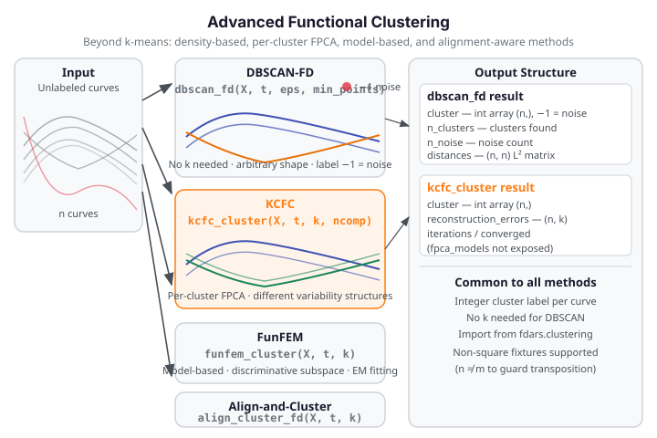

Advanced Clustering¶
Beyond standard \(k\)-means and fuzzy \(c\)-means, fdars provides four advanced functional
clustering algorithms: density-based outlier detection, per-cluster structure discovery,
model-based grouping, and simultaneous alignment with clustering. These methods suit
datasets where curves are not cleanly separated by centroid distance alone.
| Method | fdars function |
Key output |
|---|---|---|
| Density-based (DBSCAN-FD) | dbscan_fd |
cluster (int64, -1=noise), distances |
| FPCA-reconstruction (KCFC) | kcfc_cluster |
cluster, reconstruction_errors (n, k) |
| Model-based (FunFEM) | funfem_cluster |
cluster, membership (n, k) (soft) |
| Alignment + clustering | align_cluster_fd |
cluster, templates (list of k arrays) |
| Basic k-means / fuzzy | kmeans_fd, fuzzy_cmeans_fd |
see Clustering |
All functions are importable from fdars.clustering.

When to use¶
DBSCAN-FD is the natural choice when you do not know \(k\) in advance, when clusters
have arbitrary shape, or when the data contains genuine outliers you want to flag rather
than force-assign. DBSCAN discovers clusters of arbitrary geometry and marks low-density
curves as noise (label \(-1\)). Set eps using the \(k\)-NN distance elbow from the
distances output (see eps selection below).
KCFC (K-Centres Functional Clustering) fits a separate FPCA model per cluster, so
each group can have its own mean shape and variability structure. Use it when you expect
clusters to differ in covariance structure, not just in mean. The reconstruction_errors
matrix is the primary diagnostic: a low error for cluster \(c\) signals confident membership.
FunFEM (Functional Mixture EM) works in a cluster-specific discriminative subspace
projected from a global FPCA space. It returns soft probabilistic memberships, making it
the right choice when cluster boundaries are fuzzy or you need uncertainty quantification.
Each row of membership sums to 1 and can be read as a posterior probability vector.
Align-and-Cluster simultaneously warps curves (phase alignment) and assigns cluster membership. Use it when curves belong to the same family of shapes but differ in timing or speed — for example, peaks that occur at different \(t\) values. The result contains phase-aligned cluster templates alongside standard labels.
Quick rule: Start with DBSCAN-FD or KCFC. Move to FunFEM when you need soft memberships. Use Align-and-Cluster when raw \(L^2\) distance fails because of phase variation. For a simple centroid baseline, see Clustering.
DBSCAN-FD — Density-Based Spatial Clustering¶
DBSCAN groups observations that are mutually reachable within radius eps in \(L^2\) function
space and flags isolated curves as noise. Unlike \(k\)-means, DBSCAN requires no pre-specified
\(k\): the number of clusters emerges from the data geometry.
Parameters
| Parameter | Type | Default | Description |
|---|---|---|---|
data |
ndarray (n, m) |
— | Functional observations |
argvals |
ndarray (m,) |
— | Evaluation grid |
eps |
float |
0.5 |
Neighbourhood radius in \(L^2\) distance units |
min_points |
int |
3 |
Minimum neighbours for a core point |
Returns a dictionary:
| Key | Shape / Type | Description |
|---|---|---|
cluster |
(n,) int64 |
\(-1\) = noise; \(0, \ldots, k-1\) = cluster ids |
n_clusters |
int |
Number of clusters found (excluding noise) |
n_noise |
int |
Number of noise points |
distances |
(n, n) float |
Pairwise \(L^2\) distance matrix |
Cluster label dtype
cluster labels are int64 (signed) because noise points require the negative
sentinel \(-1\). Filter noise with labels = result["cluster"]; core = labels[labels >= 0].
eps selection using the distances matrix¶
The distances key returned by dbscan_fd is the full pairwise \(L^2\) matrix — use it
to select eps before re-running DBSCAN at a well-chosen threshold:
import numpy as np
from docs_fig import fig, render
from fdars.clustering import dbscan_fd
rng = np.random.default_rng(42)
n, m = 25, 40
t = np.linspace(0, 1, m)
X = np.vstack([
np.array([np.sin(2 * np.pi * t + rng.uniform(-0.2, 0.2)) for _ in range(13)]),
np.array([np.cos(2 * np.pi * t + rng.uniform(-0.2, 0.2)) for _ in range(12)]),
])
db = dbscan_fd(X, t, eps=0.5, min_points=3)
dist = np.asarray(db["distances"])
# k-distance elbow for min_points=3: column 0 is the self-distance (0.0), so the
# 3rd nearest neighbour is column 3. Sort each row, take column 3, then sort globally.
knn_dist = np.sort(dist, axis=1)[:, 3]
knn_sorted = np.sort(knn_dist)
f, ax = fig(figsize=(7.0, 3.6))
ax.plot(knn_sorted, color="#3f51b5", lw=1.8)
ax.axhline(0.5, color="#e8710a", ls="--", lw=1.4, label="eps=0.5")
ax.set(title="3rd-NN distance (sorted): eps guide for min_points=3",
xlabel="observation rank", ylabel="3rd-NN L² distance")
ax.legend()
print(render(f))
print("FDARS_FENCE_OK")
Choosing eps from the distance matrix
Sort each row's \(\min\_points\)-th nearest-neighbour distance (column min_points of the
row-sorted matrix, since column 0 is the self-distance) and look for an elbow — a sharp
upward bend. Set eps just below that bend. The distances matrix returned by
dbscan_fd provides all the raw pairwise data needed; no separate call is required.
KCFC — K-Centres Functional Clustering¶
KCFC fits a separate FPCA model per cluster and assigns each curve to the cluster whose
basis best reconstructs it. The reconstruction_errors matrix — of shape (n, k) — is
the primary diagnostic: result["reconstruction_errors"][i, c] is the FPCA reconstruction
error of observation \(i\) when projected onto cluster \(c\)'s basis.
from fdars.clustering import kcfc_cluster
kfc = kcfc_cluster(data, argvals, k=2, ncomp=3, max_iter=50, seed=42)
Parameters
| Parameter | Type | Default | Description |
|---|---|---|---|
data |
ndarray (n, m) |
— | Functional observations |
argvals |
ndarray (m,) |
— | Evaluation grid |
k |
int |
2 |
Number of clusters |
ncomp |
int |
3 |
FPC components per cluster |
max_iter |
int |
50 |
Maximum EM iterations |
seed |
int |
42 |
Random seed |
Returns a dictionary:
| Key | Shape / Type | Description |
|---|---|---|
cluster |
(n,) int64 |
Cluster labels \(0, \ldots, k-1\) |
reconstruction_errors |
(n, k) float |
Per-observation per-cluster FPCA reconstruction error |
iterations |
int |
Number of iterations performed |
converged |
bool |
Whether the algorithm converged |
import numpy as np
from fdars.clustering import dbscan_fd, kcfc_cluster
rng = np.random.default_rng(42)
n, m = 25, 40
t = np.linspace(0, 1, m)
X = np.vstack([
np.array([np.sin(2 * np.pi * t + rng.uniform(-0.2, 0.2)) for _ in range(13)]),
np.array([np.cos(2 * np.pi * t + rng.uniform(-0.2, 0.2)) for _ in range(12)]),
])
db = dbscan_fd(X, t, eps=0.5, min_points=3)
kfc = kcfc_cluster(X, t, k=2)
recon = np.asarray(kfc["reconstruction_errors"]) # (n, k)
labels = np.asarray(kfc["cluster"])
# reconstruction_errors[i, assigned_cluster] is the minimum — confidence check
assigned_err = recon[np.arange(n), labels]
other_err = recon[np.arange(n), 1 - labels]
print(f"dbscan n_clusters: {db['n_clusters']} n_noise: {db['n_noise']}")
print(f"kcfc cluster shape: {labels.shape} converged: {kfc['converged']}")
print(f"mean assigned-cluster error: {assigned_err.mean():.4f}")
print(f"mean alternative-cluster err: {other_err.mean():.4f}")
print("FDARS_FENCE_OK")
dbscan n_clusters: 2 n_noise: 0 kcfc cluster shape: (25,) converged: True mean assigned-cluster error: 0.0000 mean alternative-cluster err: 0.0000 FDARS_FENCE_OK
Using reconstruction_errors as membership confidence
For each observation i, the assigned cluster minimises reconstruction_errors[i, :].
A large gap between reconstruction_errors[i, assigned] and the runner-up signals
high confidence. A small gap — or values close to those of another cluster — indicates
an ambiguous case worth inspecting manually or re-clustering with FunFEM for soft
assignments.
FunFEM — Functional Mixture EM¶
FunFEM projects all curves onto a global FPCA space (ncomp components) and then finds
a cluster-specific discriminative subspace of dimension p_disc. Cluster memberships
are probabilistic: each row of the membership matrix sums to 1.
from fdars.clustering import funfem_cluster
fem = funfem_cluster(data, argvals, k=2, ncomp=10, p_disc=0, max_iter=50, tol=1e-6, seed=42)
Parameters
| Parameter | Type | Default | Description |
|---|---|---|---|
data |
ndarray (n, m) |
— | Functional observations |
argvals |
ndarray (m,) |
— | Evaluation grid |
k |
int |
2 |
Number of clusters |
ncomp |
int |
10 |
Global FPCA components (note: default is 10, not 3) |
p_disc |
int |
0 |
Discriminative subspace dimension; 0 → auto min(k-1, ncomp_eff) |
max_iter |
int |
50 |
Maximum EM iterations |
tol |
float |
1e-6 |
Convergence tolerance |
seed |
int |
42 |
Random seed |
Returns a dictionary:
| Key | Shape / Type | Description |
|---|---|---|
cluster |
(n,) int64 |
Hard cluster labels (argmax of membership) |
membership |
(n, k) float |
Soft posterior probabilities; rows sum to 1 |
disc_subspace |
(ncomp_eff, p_disc_eff) |
Discriminative subspace basis |
log_likelihood |
float |
Final log-likelihood of the mixture |
iterations |
int |
Number of EM iterations performed |
converged |
bool |
Whether the EM converged |
import numpy as np
from fdars.clustering import funfem_cluster
rng = np.random.default_rng(42)
n, m = 30, 40
t = np.linspace(0, 1, m)
X = np.vstack([
np.array([np.sin(2 * np.pi * t + rng.uniform(-0.2, 0.2)) for _ in range(15)]),
np.array([np.cos(2 * np.pi * t + rng.uniform(-0.2, 0.2)) for _ in range(15)]),
])
fem = funfem_cluster(X, t, k=2, ncomp=5, seed=42)
membership = np.asarray(fem["membership"]) # (n, k), rows sum to 1
labels = np.asarray(fem["cluster"])
print(f"funfem cluster labels (first 6): {labels[:6].tolist()}")
print(f"membership[0] (soft assignments): {membership[0].round(4).tolist()}")
print(f"membership row sums (should all ≈ 1): {membership.sum(axis=1)[:5].round(6).tolist()}")
print(f"log_likelihood: {fem['log_likelihood']:.4f} converged: {fem['converged']}")
print("FDARS_FENCE_OK")
funfem cluster labels (first 6): [1, 1, 1, 1, 1, 1] membership[0] (soft assignments): [0.0, 1.0] membership row sums (should all ≈ 1): [1.0, 1.0, 1.0, 1.0, 1.0] log_likelihood: 22.7449 converged: True FDARS_FENCE_OK
FunFEM soft membership vs. KCFC hard labels
Unlike KCFC (which assigns hard labels based on minimum reconstruction error), FunFEM
returns a full posterior probability matrix membership. An observation with
membership[i] ≈ [0.5, 0.5] is genuinely ambiguous in the discriminative subspace —
treat it differently from one with membership[i] ≈ [0.98, 0.02]. KCFC's
reconstruction_errors offers a similar confidence signal but as an error magnitude
rather than a probability.
Align-and-Cluster — Simultaneous Alignment and Clustering¶
align_cluster_fd alternates between elastic alignment (computing phase-aligned Karcher
mean templates) and cluster assignment. The elastic distance respects amplitude variation
while ignoring phase variation (timing shifts), so curves that share a shape but occur
at different positions on the \(t\)-axis are grouped together correctly.
from fdars.clustering import align_cluster_fd
ac = align_cluster_fd(
data, argvals,
k=2,
max_iter=20,
seed=42,
use_amplitude_only=True, # default — amplitude-only elastic distance (fast)
elastic_lambda=0.0, # regularization for full elastic distance
karcher_max_iter=15,
karcher_tol=1e-4,
)
Parameters
| Parameter | Type | Default | Description |
|---|---|---|---|
data |
ndarray (n, m) |
— | Functional observations |
argvals |
ndarray (m,) |
— | Evaluation grid |
k |
int |
2 |
Number of clusters |
max_iter |
int |
20 |
Maximum alignment+assignment iterations |
seed |
int |
42 |
Random seed |
use_amplitude_only |
bool |
True |
Amplitude-only elastic distance (fast) |
elastic_lambda |
float |
0.0 |
Regularization when use_amplitude_only=False |
karcher_max_iter |
int |
15 |
Max Karcher-mean iterations per template update |
karcher_tol |
float |
1e-4 |
Karcher-mean convergence tolerance |
Returns a dictionary:
| Key | Shape / Type | Description |
|---|---|---|
cluster |
(n,) int64 |
Cluster labels \(0, \ldots, k-1\) |
templates |
list of \(k\) (m,) arrays |
Phase-aligned cluster template curves |
distances |
(n, k) float |
Elastic distance from each observation to each template |
iterations |
int |
Number of iterations performed |
converged |
bool |
Whether the algorithm converged |
Full elastic distance is significantly slower
Setting use_amplitude_only=False enables full elastic distance computation, which
is considerably slower for large \(n\) (the warping path search scales poorly). Keep
the default use_amplitude_only=True unless you specifically need to account for
both amplitude and phase variability simultaneously. For moderate datasets (\(n \leq 100\)),
the performance difference may still be acceptable.
Result Interpretation¶
KCFC: reconstruction_errors as confidence¶
reconstruction_errors[i, c] is how well cluster \(c\)'s FPCA basis reconstructs
observation \(i\). The assigned cluster always minimises this across columns. Use the gap
between assigned-cluster and next-best-cluster errors as a confidence score:
recon = np.asarray(kfc["reconstruction_errors"]) # (n, k)
labels = np.asarray(kfc["cluster"])
# Margin: distance from best to runner-up
sorted_err = np.sort(recon, axis=1)
margin = sorted_err[:, 1] - sorted_err[:, 0]
low_conf = np.where(margin < 0.01)[0] # near-tie observations
FunFEM: reading membership probabilities¶
Rows of membership are posterior probabilities. An observation belongs confidently to
cluster \(c\) when membership[i, c] > 0.90. Observations with max-probability below 0.70
lie in an ambiguous zone and may benefit from manual inspection.
DBSCAN: noise points as outlier candidates¶
Observations with cluster == -1 are density-outliers: they have fewer than min_points
neighbours within eps. Review them as potential outlier curves rather than discarding
them automatically — they may represent genuine rare patterns.
See also¶
- Clustering — basic k-means and fuzzy c-means as the baseline methods
- GMM Clustering — model-based Gaussian mixture clustering
- Elastic Clustering — elastic distance approach (related to
align_cluster_fd) - Outlier Detection — DBSCAN-FD noise points as outlier candidates
- Analyze index
References¶
- Ester, M., Kriegel, H.-P., Sander, J. and Xu, X. (1996). A density-based algorithm for discovering clusters in large spatial databases with noise. KDD 96(34), 226–231.
- Chiou, J.-M. and Li, P.-L. (2007). Functional clustering and identifying substructures of longitudinal data. Journal of the Royal Statistical Society: Series B 69(4), 679–699.
- Bouveyron, C. and Jacques, J. (2011). Model-based clustering of time series in group-specific functional subspaces. Advances in Data Analysis and Classification 5(4), 281–300.